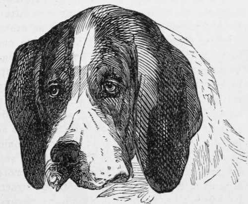

Diseases Of The Ear
Description
This section is from the book "Breeding, Training, Management, Diseases Of Dogs", by Francis Butler. Also available from Amazon: Breeding, training, management, diseases.
Diseases Of The Ear
Disease of the ear is mostly con fined to over fed animals. Wandering mongrels and dogs boarding at their own expense are not so liable to outbursts of gross humors. Heavy-coated dogs are oftener attacked with it, than the less thickly coated. Regular exercise, cleanliness and simple diet are the most important preventives. The ear is subject to disease in a variety of forms; common inflammation, sores, boils, ulcers, canker, polypus, etc. Any ailment of the ear may generally be discovered by the animal's shaking his head and rubbing it with his paw. Should there be any thick or matted hair inside the ear, it should be cleared out as gently as possible, with a pair of tweezers or the thumb and finger. Whatever be the form of the sore, the ear should first undergo a thor ough clearsing twice a day with Castile soap and lukewarm water for two or three days, without any other application. After every washing, the ear should be rubbed perfectly dry. After this, a weak solution of alum may be used twice a day, gradually increasing its strength for three or four days in succession; after which rub in " Butler's Mange Liniment," which never fails to heal up any kind of wound or sore. If this however be not at hand, make an embrocation, composed of one-fourth spirits of turpentine, one-fourth oil of tar, and a half of olive oil well mixed together, which, should be applied every day. If the ear should be very thick and much inflamed, a soft poultice may be applied, either of flaxseed meal, bread, or Indian meal made with strong green tea. But, if we can do without poultices; so much the better, as they are troublesome things, and most animals dislike bandaging. It may occasionally be advisable to lance a sore, should it continue to inflame, after other applications have proved unavailing, but should it form a natural head, I have found it better to allow it to take its course and burst of its own accord. With solid tumors, the case is different, if they fail to diminish from the use of ordinary means, the only remedy is to have them carefully cut out by a skillful practioner. Whatever be used as a wash for the car, it should be bloodwarm, both on account of its being more suitable to the sore or inflammation, but far less shocking to the animal. A weak solution of extract of lead, with one-tenth brandy may be used as a wash, and if used bloodwarm, may be poured into the car, if the part affected cannot be reached with a sponge. For obstinate diseases of the ear, that yield neither to a purification of the system, nor to ordinary outward applications, the base of the ear may be bored with a red hot iron, about the size of a common lead pencil and the wound kept open till the disease is stayed. I have found this to be of great benefit : it acts as a counter-irritation and thus relieves the affected part. The edges of the cars are subject to a scabby mangy appearance, which destroys the growth of the hair, and sometimes gradually inflames the whole flap. " Butler's Mange Liniment" will speedily cure this, If it cannot be had, rub the ear every two days with mercurial ointment, and every other day it should be thoroughly cleansed and washed off with alcohol, as strong as the animal can bear it. If a violent discharge of the ear should not he checked by the foregoing remedies, the ulcer may be burnt out with caustic. Often a putrid odor will issue from the diseased ear, though this cannot continue long, when it is kept thoroughly clean. A solution of chloride of lime, very weak, will act as a purifier. This should be used with the sponge, if the diseased parts can be reached. In curing diseases of the car, as with all other ailments, the most important thing is to attend to the general health of the patient, as otherwise the disease may be only driven from one locality, to be forced out of another. It may be often necessary to muzzle the animal, on applying the wash, poultice, seton, &e. ; he may easily be kept steady and harmless, and should on no account be neglected, on account of his aversion to handling, but as little roughness as possible should be resorted to. Thorns should be carefully extracted from the ear, before any inflammation sets in. as they then become more difficult to detect and more painful to extract. I recommend as a preventive against sore ears, that they be kept perfectly clean by a regular systematic cleansing with soap and water. I re ally believe filth to be the ground work of half the diseases of the ear, as, however clean other parts of the body may be, the ear is generally left in a dirty condition. Few even, who wash their little pets ever think of thoroughly cleansing the inside of the ear.

Continue to:
- prev: Chinese Hairless Dog
- Table of Contents
- next: Sprains. Dislocations, Fractures, Wounds, Swellings In The Neck And Throat